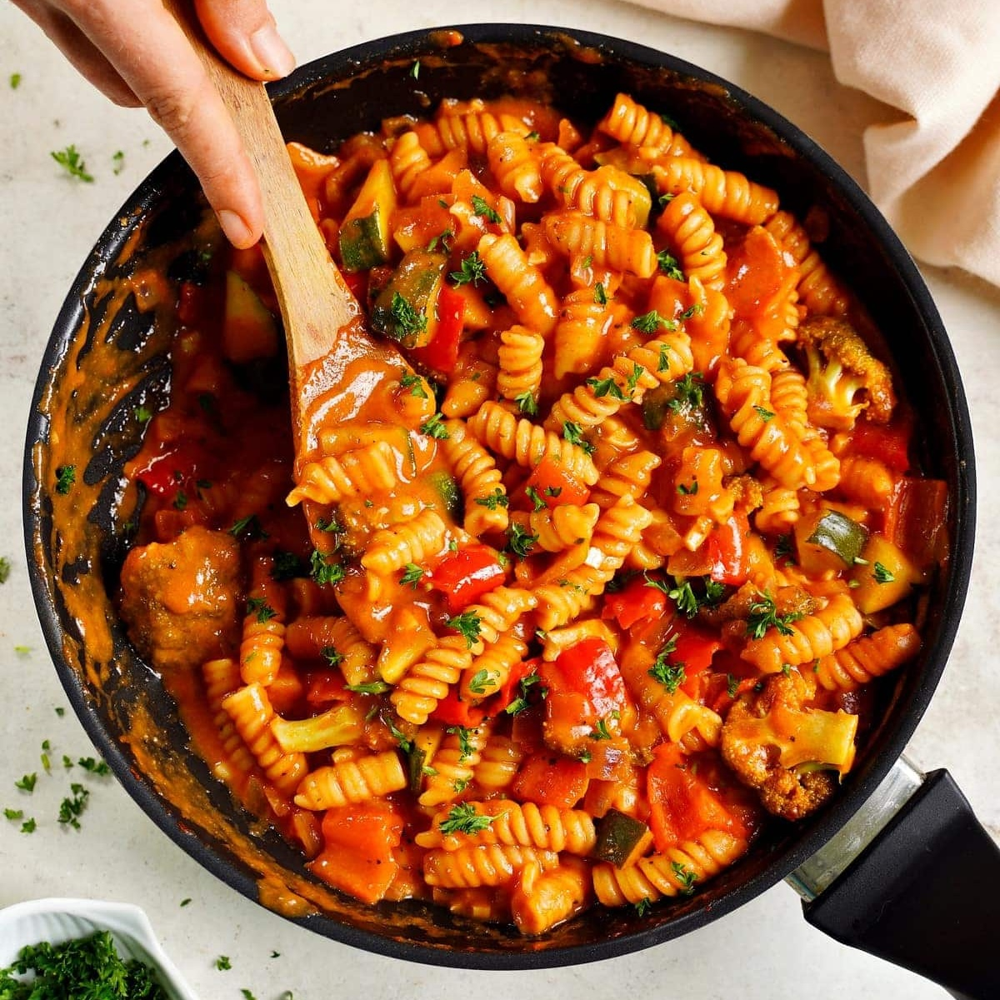

Vegetable Pasta Sauce

Description
This pasta sauce is simple yet delicious. I like to serve it over chickpea pasta for added protein.
Ingredients
- 1 small can of tomato paste
- Bell peppers
- Onion
- Garlic cloves (2-4 depending on how garlicky you like it)
- Olive oil
- Grated parmesan or Italian cheese blend
- Salt
- Pepper
- Garlic powder
Steps
- Chop the onions and peppers and mince the garlic cloves.
- Heat a bit of olive oil in a saucepan and saute the peppers, onions, and garlic until the onion starts to brown.
- Add the tomato paste and stir it all together, adding more olive oil if the consistency is too thick.
- Add salt, pepper, and garlic powder to taste.
- Mix in grated parmesan or Italian blend, allowing it to melt throughout the sauce.
- Serve over pasta.